De logische laag
Q-highschool / Basis van CS / Bijeenkomst 6
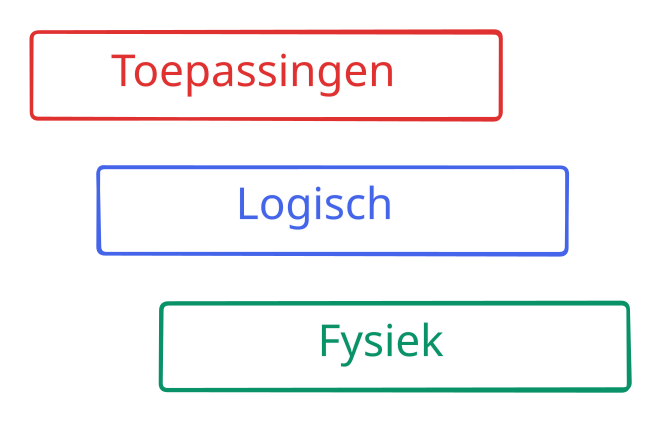
Informatie
Q-highschool / Basis van CS / Bijeenkomst 6Automaten
Q-highschool / Basis van CS / Bijeenkomst 6Wat is een automaat?
Koffieautomaat
- Toestanden: wat doet het apparaat op dit moment
- Transities: acties van de gebruiker of automatische acties
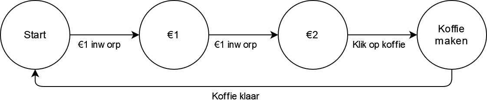
Tikkertje met 4 personen
Welke toestanden? Welke transities?
Boter-kaas-en-eieren
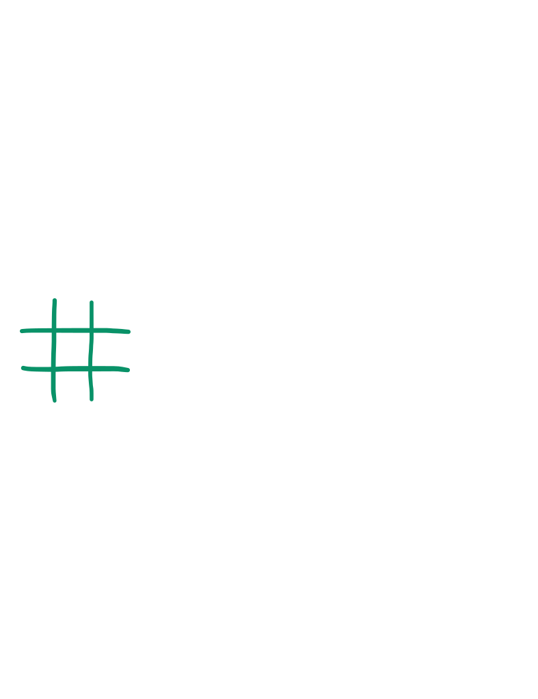
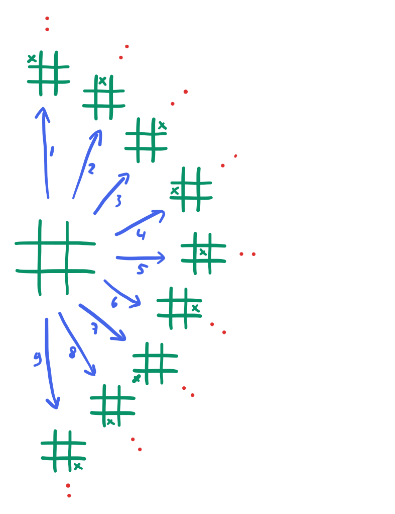
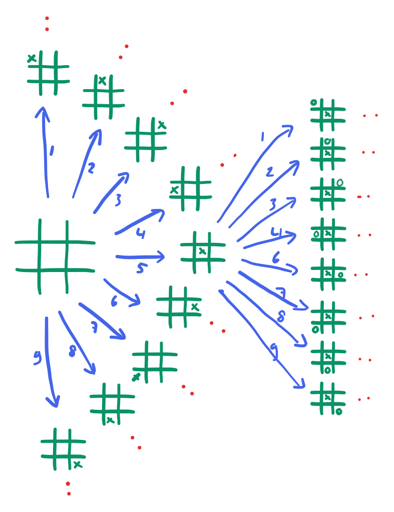
Schateiland
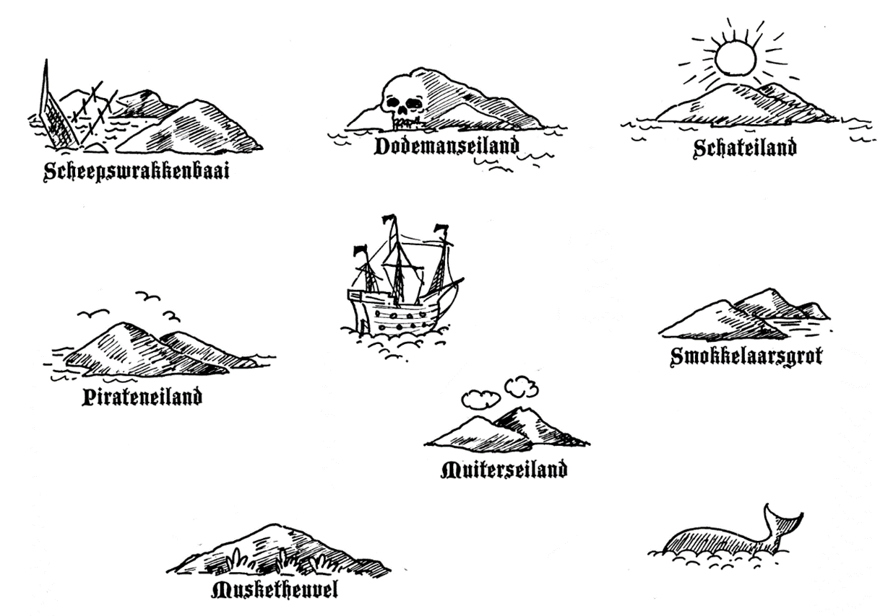
Schateiland
Aan de slag

Turing machines en wat computers niet kunnen
Q-highschool / Basis van CS / Bijeenkomst 6Stoppen of wachten?
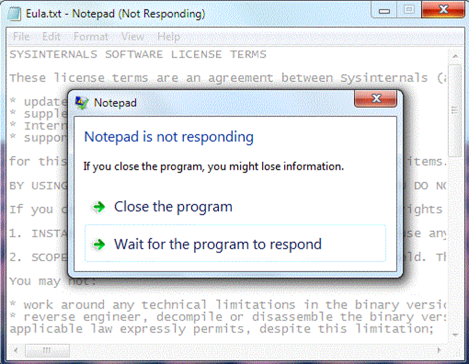 |
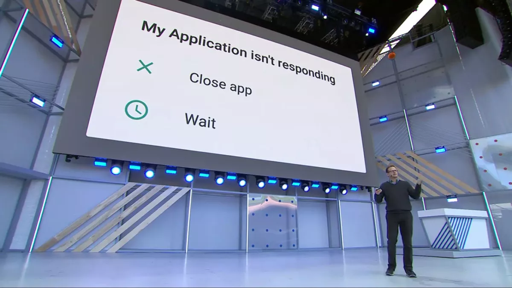 |
Turing Machine
Een model voor hoe elke computer werkt
- Een Turing machine kan alles wat een computer kan
- Turing complete: een machine die alles kan wat een Turing machine kan
PowerPoint is Turing complete
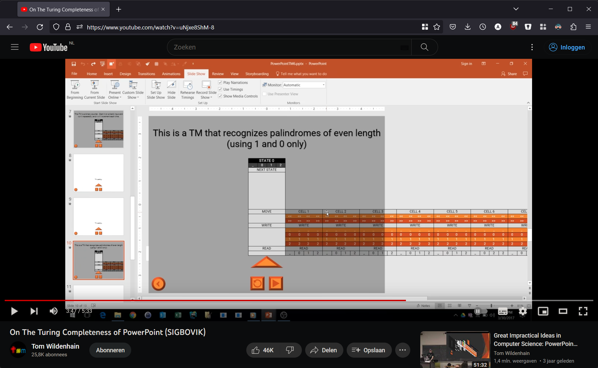
Minecraft is Turing complete
Turing Machine
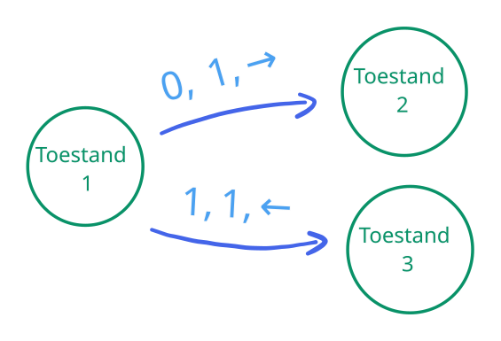
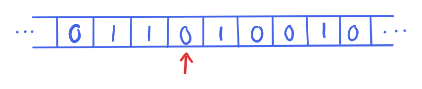
Halting problem: stoppen of wachten?
Volgende bijeenkomst
- Online
-
Aan de slag met de eindopdracht:
- De logica van jullie systeem: teken een automaat!
Eindopdracht
Eerste inlevermoment:
{{ eerste_inlevermoment }}
Tweede inlevermoment:
{{ tweede_inlevermoment }}
Laat het weten voor {{ tweede_inlevermoment_melden }}